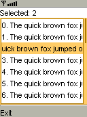

|

|
 |
PContainer container;
PLabel label;
PList list;
PScrollBar scrollbar;
void setup() {
container = new PContainer();
container.setBounds(0, 0, width, height);
label = new PLabel("Selected: ");
//// let the label calculate its ideal width/height
label.calculateBounds(0, 0, width, height);
//// set the label to fill the full width of the screen
label.setBounds(0, 0, width, label.height);
container.add(label);
int y = label.y + label.height;
//// put a scrollbar on the right side of the screen
//// we do not need to explicitly add it to the container
//// since it will be linked to the list
scrollbar = new PScrollBar();
scrollbar.setBounds(width - 4, y, 4, height -y);
//// create a new list
list = new PList();
list.scrollbar = scrollbar;
list.setBounds(0, y, width - 4, height - y);
for (int i = 0; i < 25; i++) {
list.add(i + ". The quick brown fox jumped over the lazy dogs.");
}
container.add(list);
container.initialize();
container.acceptFocus();
}
void draw() {
container.draw();
}
void keyPressed() {
container.keyPressed();
}
void keyReleased() {
container.keyReleased();
}
void libraryEvent(Object library, int event, Object data) {
if (library == list) {
//// update selection label
label.text = "Selected: " + list.selected;
}
} |
 Reference
Reference